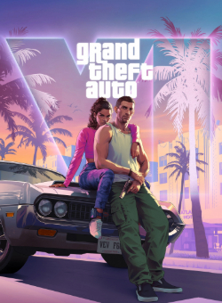

GTA 6 - O jogo mais esperado dos ultimos anos.
A Take-Two Interactive confirmou que Grand Theft Auto VI será lançado em 19 de novembro de 2026, após dois adiamentos. O título chegará em versão digital e também em mídia física, atendendo à demanda dos fãs mais tradicionais. Com um investimento avaliado em quase um bilhão de dólares, o jogo já é considerado um dos projetos mais caros e ambiciosos da história dos videogames, e a empresa garante que não haverá novos atrasos.
Segundo Strauss Zelnick, CEO da Take-Two, GTA 6 promete elevar os padrões técnicos e narrativos da franquia, oferecendo um mundo aberto ainda mais detalhado e uma experiência cinematográfica. A Rockstar Games prepara uma campanha de marketing massiva para o verão norte-americano, transformando o lançamento em um evento cultural global e consolidando a franquia como um dos pilares da indústria de entretenimento.